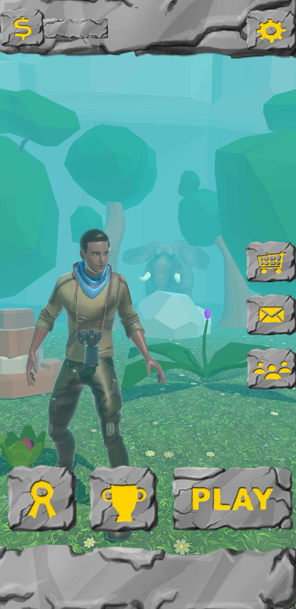

Virtual Ceylon
Virtual Ceylon presents ancient history in a modern video-game format, weaving a narrative that combines pulse-pounding action with enthralling tales of days past.
It gives the player the opportunity to step into the shoes of a modern archaeologist who clashes with his artefact-robbing nemesis, both toppling into an arcane gateway to the past.
As the archaeologist races desperately through time and space to escape his implacable enemy, it is you who must guide him to safety.
Collect artefacts, craft tools, and explore the old world as you engage in the race of your lifetime.
Available for free on Google Play Store.
Download
Get ready to run!
Run for your life through a time long past!